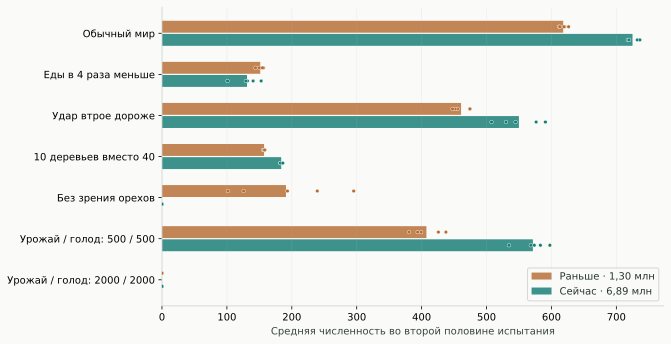
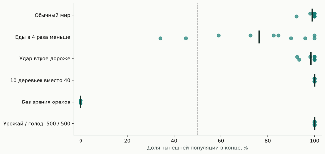
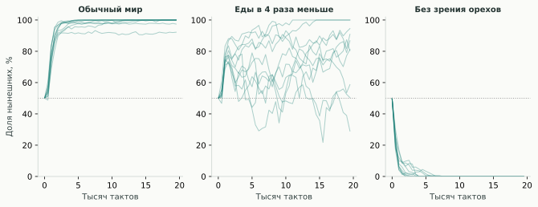
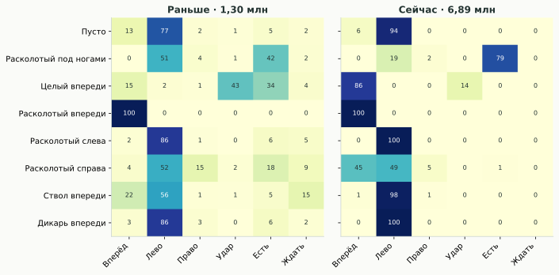
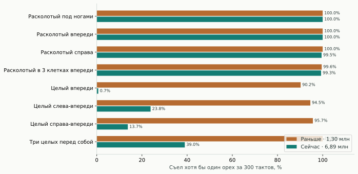
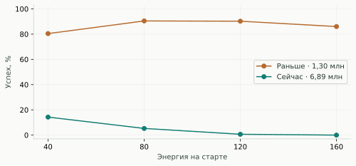
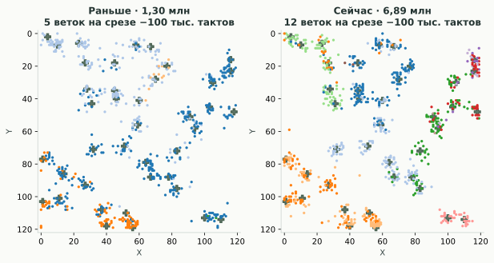

Прогресс есть. Но «умнее во всём» они не стали.
В обычной среде старая популяция поддерживала в среднем 618,1 живых, новая — 724,9. Это средняя численность на тактах 10 001–20 000, а не удачный кадр в конце. За весь тест они съедали почти одинаковое количество орехов: 80 594 против 79 984. Новая популяция содержала больше особей на примерно том же потоке еды.
На один расколотый орех приходилось 4,79 → 2,08 удара. Это согласуется с экономией энергии на ударах. Показатель не равен доле успешных ударов: одним ударом можно расколоть несколько орехов.
Главное открытие: новая стратегия хорошо приспособлена к жизни среди деревьев и соседей, но у неё есть выраженные слабые места. Успех в конкуренции, выживание без зрения и решение одиночной задачи дают разные рейтинги.
Одинаковые миры, разные поколения
Для каждой среды созданы пять новых карт. В отдельных мирах стартуют 120 старых или 120 нынешних дикарей. В соревнованиях — по 60; для каждой карты две рассадки с обменом местами. Возраст сброшен в ноль, энергия у всех 120. Мутации в основной серии выключены: дети наследуют мозг без изменений, но размножение и отбор продолжаются.

| Среда | Старые: средняя популяция | Новые: средняя популяция | Победы новых | Доля новых в финале дуэли |
|---|---|---|---|---|
| Обычный мир | 618,1 | 724,9 | 10/10 | 99,1% |
| Еды в 4 раза меньше | 151,4 | 131,0 | 8/10 | 76,4% |
| Удар втрое дороже | 460,7 | 549,9 | 10/10 | 98,4% |
| 10 деревьев вместо 40 | 157,3 | 183,7 | 10/10 | 100,0% |
| Без зрения орехов | 191,0 | 0,0 | 0/10 | 0,0% |
| Урожай / голод: 500 / 500 | 407,4 | 571,4 | 10/10 | 100,0% |
| Урожай / голод: 2000 / 2000 | 0,0 | 0,0 | 0/10 · оба вымерли: 10 | — |
«Победа» здесь — больше живых потомков к концу 20 000 тактов. Это не обязательно полное вытеснение соперника. Десять дуэлей образуют пять пар по карте, а не десять независимых карт. Среднее финальных долей рассчитано по запускам, а не по суммарному числу особей.

Засуха показывает цену специализации
При плодоношении 0,025 вместо 0,10 новые выигрывают 8 из 10 дуэлей. Однако в отдельных мирах у старых средняя поздняя численность 151,4, у новых 131,0. Старые за тест съедают больше еды: 19 736 против 15 766. Побеждать другого потребителя и эффективно поддерживать самостоятельное сообщество — разные свойства.
Ослепление меняет победителя
Когда отключены оба канала орехов, нынешняя популяция вымирает во всех пяти отдельных мирах и во всех десяти дуэлях. Старые в отдельных мирах сохраняют в конце в среднем 192,2 живых. Зрение стволов, границ и соседей, а также энергия и возраст сохранены. Прежние менее точные действия иногда обеспечивают выживание даже без информации о еде; новая политика сильнее зависит от нужных сигналов.

Голод должен оставлять шанс
Пульсация сохраняет номинальное среднее плодоношение: 0,20 в урожай и 0 в голод. Но доступность пищи во времени резко меняется. Длинные фазы по 2000 тактов уничтожают обе популяции. При максимуме энергии 220 и базовом расходе 0,25 запас покрывает лишь 880 тактов без еды, даже без движения и ударов. Поэтому добавлен более мягкий вариант 500 / 500. Эти испытания проверяют устойчивость к шоку, а не доказывают, что циклический голод обучает более умный мозг.
Прошлый чемпион и продолжающаяся эволюция
Отдельный соперник — семья №4 из предыдущего турнира: 20 сохранённых мозгов, размноженных до 60 участников. Она появилась в независимом 200-тысячном прогоне, а не является старой популяцией на 1,30 млн тактов. Нынешняя популяция выигрывает у неё 10 из 10 дуэлей; её средняя финальная доля — 99,8%. Другие четыре семьи повторно не испытывались.
| Среда | Мутации | Победы новых | Доля новых |
|---|---|---|---|
| Обычный мир | Выключены | 10/10 | 99,1% |
| Обычный мир | Включены, ±0,52 | 10/10 | 99,6% |
| Еды в 4 раза меньше | Выключены | 8/10 | 76,4% |
| Еды в 4 раза меньше | Включены, ±0,52 | 10/10 | 86,6% |
Дополнительные 20 дуэлей с мутациями показывают исход при продолжающейся эволюции. Изменение победителя в отдельном запуске ещё не означает лучшую «обучаемость»: одновременно меняются мутации, выживание и состав популяции.
Что изменилось в поведении
У всех 622 старых и 757 нынешних мозгов проверены одинаковые искусственные наблюдения: энергия 100, возраст 1000, вокруг пусто, кроме указанного объекта. В таблице — вероятности действий в процентах, усреднённые по всей популяции.

На расколотый орех под ногами вероятность «есть» выросла с 42,4% до 79,1%. На пустой картинке вероятность левого поворота выросла с 77,5% до 93,5%. На расколотый орех прямо впереди обе популяции и раньше почти всегда шли вперёд. Зато правосторонний сигнал у новых не вызывает столь же надёжного правого поворота. Это точная, но асимметричная политика; впечатление вращения на месте имеет реальную основу.
Без соседей обнаружилась большая регрессия
Каждый мозг прошёл по три воспроизводимых испытания на каждую одиночную задачу. Поле 16×16, нет деревьев и других дикарей, орехи не добавляются, старт в центре лицом вверх. Возраст 0, энергия 120, предел 300 тактов. Успех — съесть хотя бы один орех. Энергия за еду в этих коротких задачах равна нулю, поскольку тест сразу заканчивается после первого съеденного ореха; это исключает размножение.

Целый орех прямо впереди: 90,2% → 0,66% успешных решений. Три целых ореха в ширину перед собой: 100% → 39,0%. При этом расколотый орех под ногами съедают все, а среднее время сокращается с 3,36 до 1,40 такта. Новая политика улучшила одни реакции и потеряла надёжность других.

При энергии 40 новые решают эту задачу в 14,3% случаев, при 80 — в 5,3%, при 120 — в 0,66%, при 160 — ни разу. Поведение зависит от внутреннего состояния. Однако даже голодная новая популяция уступает старой в этой изолированной задаче.
Что пока нельзя утверждать: что новые — «паразиты, вообще не умеющие раскалывать». Они самостоятельно поддерживают большие сообщества в отдельных мирах, где старых дикарей нет. Одиночный тест одновременно убирает соседей, деревья и обычную плотность пищи. Он доказывает провал в конкретном контексте, но не устанавливает единственную причину.
Сеть осталась той же: 607 входов → 32 нейрона → 6 действий, 19 654 параметра, без внутренней памяти. Следовательно, наблюдаемый прогресс не потребовал дополнительных нейронов. Эти эксперименты не сравнивают размеры мозга и не доказывают оптимальность числа 32.
Племён стало больше, но дерево не равно семье
В обеих популяциях ближайшие к деревьям группы занимают все 40 деревьев. Родословная даёт другое разбиение: на срезе за 100 000 тактов до каждого снимка сохранились 5 веток раньше и 12 сейчас. На глубине 10 000 тактов — 39 и 72; на глубине миллиона — 1 и 2. Единственного объективного числа «племён» здесь нет: оно зависит от выбранного масштаба родства. Здесь сопоставлены одинаковые интервалы в тактах, а не одинаковое число поколений.

У нынешних пять крупнейших веток насчитывают 136, 133, 108, 93 и 92 дикаря. Некоторые ветки встречаются у нескольких деревьев. Это пространственно распределённые родственные группы; намеренного объединения в племя или распознавания родства мы не измеряли.
| Показатель | Раньше | Сейчас |
|---|---|---|
| Медианная дистанция геномов внутри одного дерева | 0,053 | 0,058 |
| Между разными деревьями | 0,185 | 0,220 |
| Корреляция расстояния на карте и различия геномов | 0,404 | 0,473 |
| Родственных связей между соседями под одним деревом, медиана | 44,0 | 60,5 |
| Между жителями разных деревьев | 460,0 | 665,0 |
Различие геномов — RMS по всем 19 654 весам. Группа у дерева определяется по ближайшему стволу, без жёсткой границы территории. Родственные связи — сумма переходов от пары к её ближайшему общему предку, оценена примерно на 20 тысячах случайных пар каждого снимка. Географическая корреляция посчитана по всем парам; перестановочный тест меток особей, 199 перестановок, в обоих снимках p = 0,005. Это минимальный достижимый здесь уровень, а не точная оценка меньшей вероятности. Разница корреляций 0,404 → 0,473 отдельно на значимость не проверялась.
Медианная дистанция между старым и нынешним геномом — 0,592, внутри нынешней популяции — 0,219. Геномы заметно изменились, однако расстояние между весами само по себе не измеряет качество поведения.
Ветки различаются и поведением: у крупной нынешней ветки №5 022 561 (108 живых) вероятность съесть орех под ногами — 96,3%, а у №5 025 238 (92 живых) — 59,3%. Обе при этом не решили ни одной одиночной задачи с целым орехом прямо впереди. Разнообразие реакций сохранилось внутри общей специализации.
Ближайший общий предок
Для всех нынешних живых это №3 817 862, поколение 4674. Родился на такте 5 125 962, умер на 5 135 382. Он жил за 1 762 497 тактов до снимка — примерно за 25,6% полной истории мира. У старой популяции общий предок №713 969 родился на такте 924 003.
Это не недавний общий предок «один процент времени назад». И сам факт общего предка не означает, что вся популяция когда-то сокращалась до одного дикаря: остальные ветки могли постепенно исчезнуть, пока общая численность оставалась высокой.
Все ветки: численность, деревья и реакции
Раньше · 1,30 млн
| Предок ветки | Живых | Деревьев | Есть под ногами¹ | Целый орех в одиночку² |
|---|---|---|---|---|
| #923080 | 316 | 30 | 32,6% | 100,0% |
| #922510 | 208 | 23 | 45,7% | 70,8% |
| #921512 | 85 | 9 | 71,4% | 100,0% |
| #920622 | 11 | 3 | 36,3% | 100,0% |
| #923069 | 2 | 2 | 32,3% | 100,0% |
Сейчас · 6,89 млн
| Предок ветки | Живых | Деревьев | Есть под ногами¹ | Целый орех в одиночку² |
|---|---|---|---|---|
| #5025231 | 136 | 14 | 77,0% | 0,0% |
| #5023486 | 133 | 14 | 63,2% | 0,0% |
| #5022561 | 108 | 16 | 96,3% | 0,0% |
| #5024486 | 93 | 11 | 86,7% | 1,4% |
| #5025238 | 92 | 10 | 59,3% | 0,0% |
| #5025615 | 84 | 6 | 81,8% | 0,0% |
| #5025520 | 47 | 7 | 92,9% | 0,0% |
| #5025652 | 35 | 2 | 91,0% | 0,0% |
| #5024168 | 14 | 5 | 92,7% | 0,0% |
| #5025055 | 11 | 4 | 96,9% | 33,3% |
| #5023750 | 2 | 1 | 72,3% | 0,0% |
| #5024164 | 2 | 2 | 55,6% | 0,0% |
¹ Средняя вероятность действия «есть» при искусственном наблюдении ореха под ногами. ² Доля одиночных испытаний «целый впереди», стартовая энергия 120. Ветки выделены по предку на одинаковой временной глубине, а не алгоритмом кластеризации весов. Маленькие ветки дают нестабильные оценки.
Что это говорит о нашей эволюции
- Долгий прогон дал измеримое преимущество. В обычной среде нынешние дикари экономнее и конкурентоспособнее старых даже без дальнейших мутаций.
- Отбор сохранил полезную специализацию вместе с недостатками. В лесном сообществе она окупается; при отключении зрения или изоляции отдельные слабости становятся критичными.
- Простое ужесточение мира не гарантирует прогресс. Сильный голод уничтожает обе популяции. Более мягкие изменения нужно оценивать по отдельным навыкам и устойчивости, а не только по победителю.
- Добавлять нейроны пока рано называть решением. Существующая сеть умеет улучшаться. Сначала полезнее сравнить разнообразные среды и сохранить старые стратегии, которые выигрывают в изменённых условиях.
Следующий содержательный эксперимент — несколько параллельных миров со стабильным урожаем, короткими паузами и изолированной добычей. Переносить между ними одинаковые наборы мозгов и проверять, можно ли совместить нынешнюю экономность со старой надёжностью. Основной сохранённый прогон для этого менять не требуется.
Как устроена проверка
- Два снимка одной основной эволюции: 1 298 578 и 6 888 459 тактов. Условия мира одинаковы: 120×120, 40 деревьев, орех 60 энергии, базовый расход 0,25, удар 3×1 стоимостью 2, максимальный возраст 10 000.
- В общих испытаниях пять новых карт, seed 18001–18005. По 120 агентов в каждом мире; случайные выборки мозгов без повторов внутри каждой популяции. В одиночных мирах берутся 120 мозгов, в дуэлях — по 60. Места старта выбираются в радиусе пяти клеток от деревьев, поэтому тест редких деревьев не проверяет поиск леса из далёкой пустыни.
- Изначальные орехи создаются обычным конструктором мира. Даже в засухе стартовый запас не сокращается; основная метрика численности берётся во второй половине теста. Один и тот же seed не гарантирует одинаковую последовательность падений после расхождения поведения: генератор случайных чисел общий для действий и мира.
- 170 экологических запусков с горизонтом 20 000 тактов; при полном вымирании запуск заканчивается раньше. Реально исполнено 2 962 276 мировых тактов. 140 основных испытаний, 10 против прежнего чемпиона и 20 с продолжающимися мутациями.
- 45 507 одиночных испытаний: 1379 мозгов × 11 задач × 3 seed. Повторения одного мозга и родственные мозги не считаются независимыми эволюциями.
- Эффекты относятся к этим двум снимкам одной линии, а не к универсальному закону эволюции. Пять карт дают проверку переносимости, но не заменяют много независимо эволюционировавших популяций. Нет формального причинного разложения экономии энергии и конкурентного успеха.
- Проверены зеркальные рассадки, воспроизводимость по seed, отсутствие изменения унаследованных весов при выключенных мутациях и совпадение счётчика еды с суммой индивидуальных результатов. 18 автоматических тестов прошли.
Сохранение основного мира
Мир сохранён на такте 6 888 459 вместе с геномами, генератором случайных чисел и полной историей жизней. 757 живых, поколения 5849–6072, записей жизней 5 097 426. Основное приложение оставлено на паузе; эксперименты выполнялись на отдельных копиях. Полный архив — 2,94 ГБ — хранится локально и не включён в публичный сайт.
Контрольные суммы исходных снимков
SHA-256 старого: fd3cf6bed7bd7d0e04d1a1728ece970e2526ca424fd56dc8ffef65568b24deff
SHA-256 нынешнего: 9dda4489ac6e0df502487ec33af97310d9fc5fee44409fe23cd6e2ad5ec2f85f